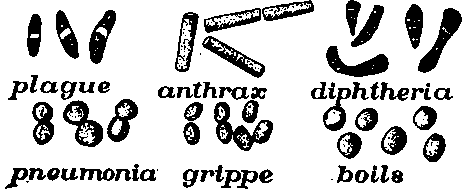

Chapter XIX. The Cause Of Sickness
Description
This section is from the book "The Human Body And Health", by Alvin Davison. Also available from Amazon: The Human Body and Health.
Chapter XIX. The Cause Of Sickness
The Work Of Parasites
Only one in every forty persons dies of old age. About twice that number meet death by accidents, while disease is responsible for over nine tenths of the deaths of the human race. The numerous diseases affecting man may be divided into two classes, known as germ diseases and cell diseases.
Fig. 133. The black dots stand for the graves made daily in the United States for the people dying from the above diseases.
The germ diseases are caused by tiny plants or animals, called parasites, feeding upon the human body, which is their host. These parasites, the smaller of which are commonly called microbes or bacteria, make one ill chiefly by means of the poisonous matter which they give out. In Europe and America, 50,000,000 people are annually laid prostrate by germ diseases, which result in over 3,000,000 deaths.
Kinds Of Diseases
Such ailments as consumption, smallpox, and scarlet fever, which may be contracted by breathing in the germs floating in the air, are called catching or contagious diseases, because the healthy acquire the disease by coming near where the sick are, or have been.
Sicknesses like yellow fever, lockjaw and malaria are not contagious diseases, for the reason that persons living in the same house and even sleeping in the same bed, with the sick do not become ill, unless a mosquito or a sharp instrument carries the germs from the sick to the well.
The cell diseases, such as alcoholism, diabetes, insanity, and cancer, are due to changed methods of work and growth on the part of the cells in certain regions of the body. More people die from germ diseases than from any other diseases. This means that most sickness results from tiny plants and animals growing within our bodies.
The Discovery Of What Causes Disease
Several hundred years ago disease was thought to be due to evil spirits, which took up their abode in the body. Here they produced continuous suffering, until driven out by various devices such as beating the patient with a strap, making hideous noises, or giving him medicine consisting of powdered bones and dried snakes.
Fig. 134. Drawing of the enlarged tonsils in a ten-year old boy. Disease germs may enter the system easily through such large soft tonsils. Thousands of germs of tuberculosis were found in the left tonsil.
Although for fifty years it has been thought by some that many diseases were due to bacteria, yet the fact that each of certain diseases is caused by a particular kind of bacteria was not clearly proved until 1876. In that year, Louis Pasteur, of France, showed that anthrax, a sickness of cattle, was caused by a rodlike plant. He got a few of these plants from the blood of a sick cow, planted them in broth, where they increased rapidly in number. A few were then injected under the skin of a healthy cow, which soon after became sick. In her blood the same plants were found in vast numbers. They were also found in all other sick cows examined, but never in well ones. These studies showed that this special kind of germ is always the cause of anthrax. In a similar manner, or by some other equally reliable method, it has been shown that each of the following ailments is produced by its own particular kind of germ: diphtheria, typhoid fever, malaria, pneumonia, leprosy, lockjaw, hydrophobia, grippe, erysipelas and tuberculosis.
Fig. 135. The bacteria of various diseases. Much enlarged.
There is no doubt that measles, scarlet fever, smallpox and mumps are also produced by germs, but no one has yet been able to find them. Since all germ diseases may be prevented by keeping the germs out of the body, much effort has been made to learn how they gain entrance.
How Germs Enter The Body
Safety from bad men, who rob and murder, depends largely upon keeping them out of our houses. The same is true of the germs that maim and kill. When we learn how they enter the body and then find a way to shut them out, they cannot harm us.
The germs of any contagious disease may be taken in by breathing, but other ways of entering the body are also known. Grippe, pneumonia, sore throat, and whooping cough are, no doubt, often caught by drinking from the same cup lately used by those just recovering from these diseases. Numerous disease germs as well as harmless ones may be present in the mouths of such patients. By examining, with a microscope, a glass touched by the lips as many as 20,000 bacteria have been found on it. More than five thousand germs have been found on a glass slip touched with the finger moistened with saliva, as when one does this to help turn the pages of a book. The fingers touching soiled books, clothing, pencils, or other things handled by the sick, may afterward serve to convey the germs to the mouth of the healthy.
How The Germs Of Tuberculosis Enter The Body
Tuberculosis commonly called consumption, frequently affects both cattle and man. Until 1905 it was thought to be generally acquired by breathing the germs into the lungs with the air. It has been lately shown, however, that the germs more often reach the lungs by passing through the walls of the alimentary canal into the lymph vessels and thence by the blood to the lungs. Here the thin-walled capillaries permit the germs to pass through into the tissues. The germs once in the body may lie there for twenty years without growing, or they may develop immediately.
Continue to: